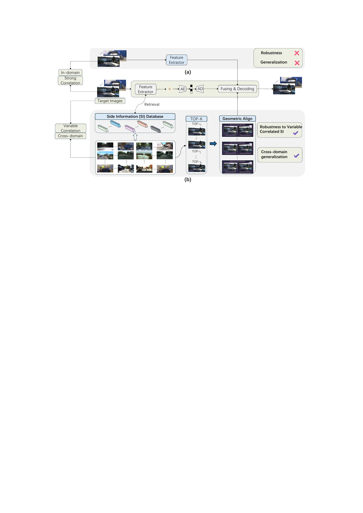
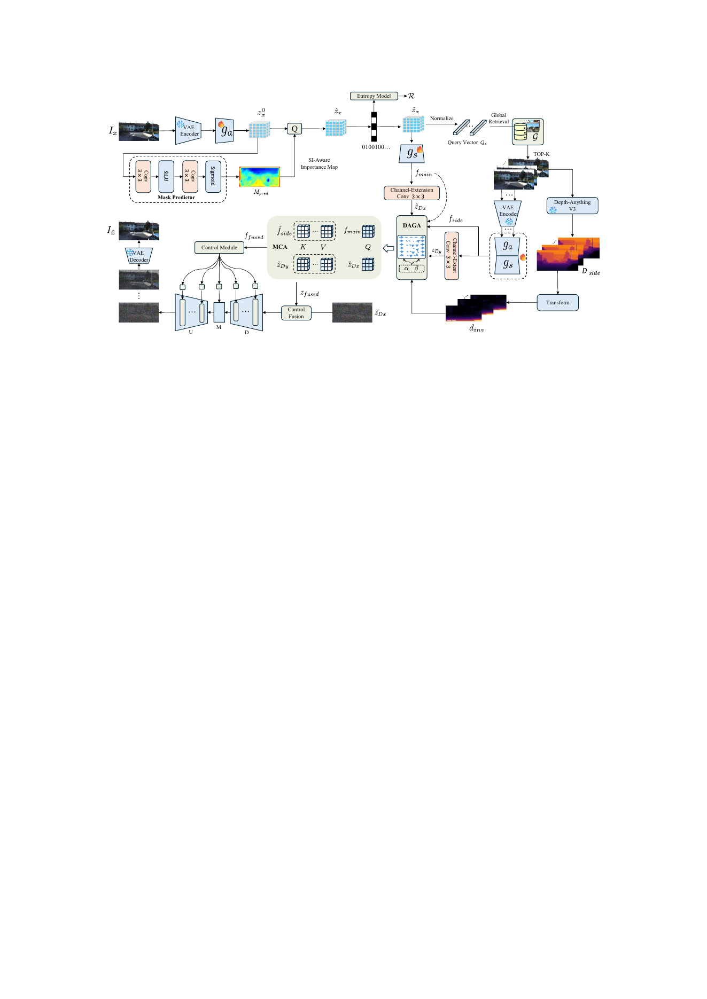
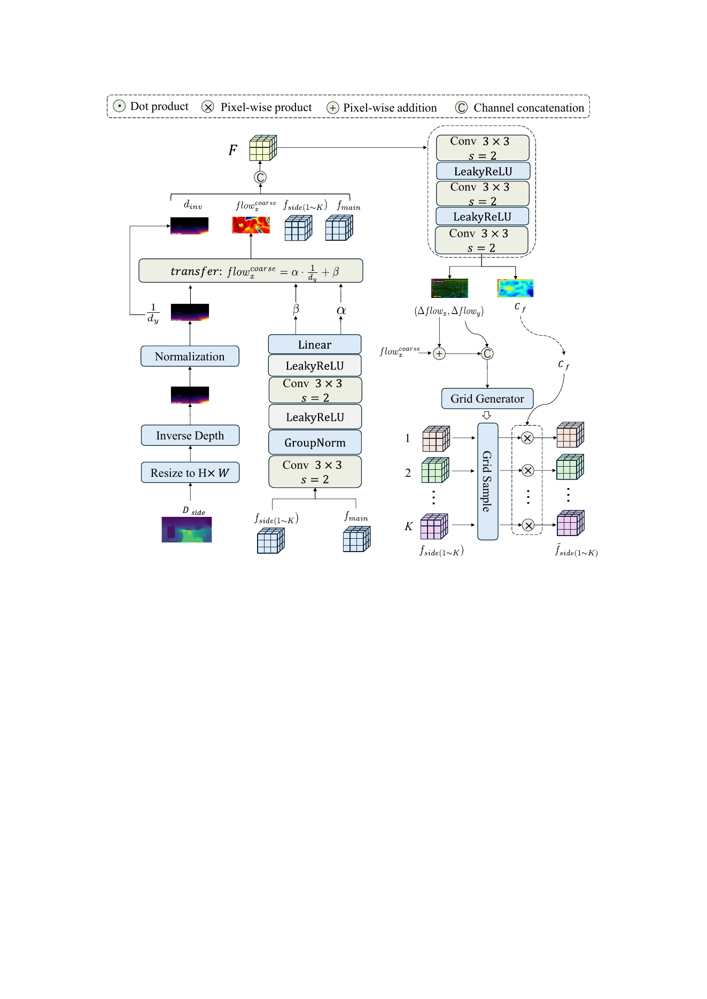

Distributed image compression · Decoder-side visual memory
Retrieval-Augmented Distributed Image Compression with Multi-Reference Side Information
School of Artificial Intelligence, Wuhan University of Technology

Distributed image compression · Decoder-side visual memory
School of Artificial Intelligence, Wuhan University of Technology

Extremely low-bitrate distributed image compression is particularly sensitive to the relevance and geometric consistency of side information. RADIC replaces fixed paired side information with multiple references retrieved from a decoder-side visual gallery. A depth-aware geometric alignment module aligns retrieved features through depth-guided coarse flow and residual refinement, while multi-reference cross-attention selectively aggregates complementary information. Decoder attention also supervises an encoder-side importance map for side-information-aware rate allocation. Trained exclusively on KITTI General, RADIC is evaluated on KITTI General, KITTI Stereo, Cityscapes, and InStereo2K under paired, non-paired, and cross-domain retrieval.

The decoded target latent queries a fixed decoder-side gallery for top-K candidate references.
DAGA combines depth-guided coarse correspondence with residual flow refinement.
MCA weighs complementary regions across multiple references and suppresses irrelevant content.
A two-step diffusion decoder produces the final reconstruction at extremely low bitrates.

Use the controls to inspect the same target under progressively weaker side information. Images and metrics are drawn from the manuscript assets.


Perceptual quality
RADIC is evaluated with LPIPS, FID, DISTS, KID, and NIQE across four datasets. Lower values indicate better perceptual reconstruction.

Pixel fidelity
PSNR and MS-SSIM complement perceptual metrics and expose the distortion–perception behavior at low bitrates.


The first relevant reference provides most of the gain. Additional references help only when they contribute nonredundant target information.

@article{xu2026radic,
title = {Retrieval-Augmented Distributed Image Compression
with Multi-Reference Side Information},
author = {Xu, Guojun and Xiang, Jianwen and Zhang, Mingyang
and Xie, Yaning and Zhou, Junwei},
year = {2026},
note = {Manuscript}
}